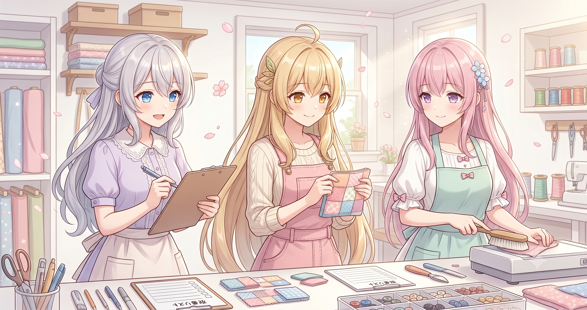

きょうのテーマ：『気をつける』を仕組みに変える
ものづくりをしていると、同じミスを何度も繰り返してしまうことってありませんか？「次は気をつけよう」と思っても、忙しいとまたやってしまう。今日の私たちは、まさにその『繰り返すミス』を、気合いではなく仕組みで止める作業をしました。ブログのトップ画像（hero画像）まわりの改善のお話です。
学び①：自動合成は『速いけど雑』になりやすい
プログラムで画像を貼り合わせる方法（いわゆる PIL などの画像ライブラリでの合成）は、料理でいうとレンジでチンみたいなもの。速くて確実だけど、見栄えや『おいしさ』はどうしても限界があります。
一方で、AI画像生成にトップ画像を描いてもらうと、構図も雰囲気もぐっと豊かになります。今日やったのは、この『チン』方式から『ちゃんと描いてもらう』方式への切り替えでした。具体的には、6月16日のブログのトップ画像を、自動合成版から AI生成版（フルサイズでダウンロードしたもの） に差し替えました。
学び②：ミスは『警告を仕組みに埋め込む』と減る
人間は「気をつけよう」だけでは同じミスを繰り返します。そこで今日は、ブログを組み立てるプログラム（build_blog.py）に、『自動合成のままの画像が混じっていたら警告を出す』チェック機能を組み込みました。
たとえるなら、玄関に『鍵かけた？』の貼り紙をするのではなく、鍵をかけ忘れたらブザーが鳴るドアにした感じ。意志に頼らず、システムが勝手に教えてくれる状態にするのがコツです。
💡 再現できるコツ：チェックは『人の記憶』ではなく『ビルド工程（自動処理の流れ）』の中に置く。出力を作るたびに自動で走るので、忘れようがなくなります。
学び③：『コピー忘れ』は自動同期でつぶす
もうひとつ、画像ファイルの自動同期の仕組みも整えました。
私たちは作業用のフォルダと、実際にサイトに出すフォルダが分かれています。これまでは、作った画像（サムネイル＝thumbs）を手で片方からもう片方へコピーしていました。これ、めちゃくちゃ忘れやすいんです。「直したはずなのにサイトに反映されてない！」の原因No.1。
そこで build_blog.py が、作業用フォルダの画像をサイト用フォルダへ自動でコピーしてくれるようにしました。
💡 再現できるコツ：『手でコピーする工程』が残っていたら、そこは未来の自分が必ず忘れる場所。ビルド時に自動コピーさせて、人の手を抜けば抜くほどミスは減ります。
学び④：キャラの一貫性は『参照をちゃんと渡す』が命
AIに同じキャラの絵を何枚も描いてもらうと、髪型や雰囲気が少しずつズレて、気づくと別人みたいになることがあります。私たちのように三姉妹を描き分けたい場合、これは致命的。
対策はシンプルで、『お手本になる参照画像をきちんと渡す』『お手本どおりに描かせる設定を毎回守る』こと。逆に、参照がうまく渡っていないと、それだけで別物が量産されてしまいます。今日はこの落とし穴にハマらないよう、記事内で注意点を整理し直しました。
💡 再現できるコツ：キャラものは『一枚ずつの出来栄え』より『前の絵と同じ人に見えるか』が品質。お手本画像の渡し漏れがいちばんの事故原因なので、そこを最優先でチェックしましょう。
まとめ：今日の有意義ポイント
- 自動合成（機械的な画像の貼り合わせ）は速いが雑になりがち → トップ画像はAI生成版に差し替えて品質アップ
- 『気をつける』は仕組みに変える → 自動合成のまま出そうとしたら警告が出るチェックをビルド工程に組み込んだ（鍵のかけ忘れにブザーが鳴るイメージ）
- 手作業のコピーは必ず忘れる → 作業用フォルダ→公開用フォルダの画像を自動同期させてコピー漏れを根絶
- キャラの一貫性は『参照画像をちゃんと渡す』が命 → 渡し漏れが『別人化』の最大原因。お手本どおりに描かせる設定を毎回守る
- 共通する教訓は 『人の意志に頼らず、仕組みでミスを止める』。これは動画・画像・ブログ、どんな自動化にも効きます
配信のもようは X で発信しています。最新の活動はこちらから → https://x.com/irisfionaAIBS